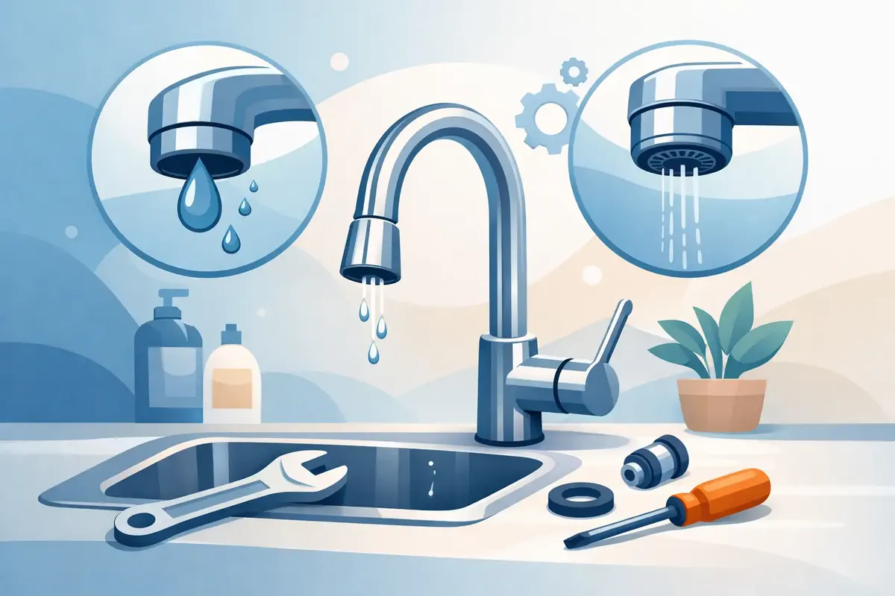

A kitchen faucet that drips into the sink all night, sprays across the counter, or barely produces a stream can make an ordinary task frustrating. Kitchen faucet repair often starts with a small worn part, but the source of the problem is not always visible from above the countertop. Catching it early can protect the faucet, the sink cabinet, and the plumbing connections below.
For Middle Tennessee homeowners, a faucet issue may be a straightforward repair, or it may be an early warning sign of mineral buildup, excessive water pressure, a failing shutoff valve, or a hidden leak. Knowing the difference helps you make a sound decision without turning a minor inconvenience into water damage.
What Is Causing Your Kitchen Faucet Problem?
A faucet has several moving parts working together every time you turn on the water. Modern single-handle faucets typically use a cartridge to control temperature and flow. Two-handle models may use stems, washers, O-rings, or valve seats. Pull-down and pull-out faucets add hoses, spray heads, and diverters to the mix.
A drip from the spout when both handles are off usually points to an internal sealing problem. A worn cartridge, deteriorated washer, or damaged valve seat can allow water to pass even though the faucet is in the off position. This may seem harmless, but a steady drip wastes water and can leave mineral stains in the sink.
Water collecting around the base of the faucet is a different concern. The seals beneath the handle or faucet body may be worn, but water can also travel down from a loose supply connection, a damaged pull-down hose, or a leaking sprayer head. Water under a sink cabinet can quietly damage wood, create odors, and encourage mold growth before a homeowner sees the full extent of the issue.
Low flow is often blamed on the faucet itself, and sometimes that is correct. More often, debris and mineral deposits collect in the aerator at the tip of the spout. If the flow is weak from both hot and cold settings, the aerator is a reasonable place to investigate. If only one side has poor flow, the issue may be farther back in the supply line, shutoff valve, or faucet cartridge.
Kitchen Faucet Repair Starts With a Safe Check
Before taking anything apart, clear the cabinet and look carefully beneath the sink. Run the faucet, switch between hot and cold water, and use the sprayer or pull-down head if you have one. Watch for drips at the shutoff valves, supply hoses, faucet connections, and drain pipes. A dry paper towel can reveal a slow leak that is hard to see.
If you plan to do a simple kitchen faucet repair yourself, turn off both hot and cold angle stops beneath the sink. Open the faucet afterward to relieve pressure and confirm that the water is truly off. If a shutoff valve will not turn, turns without stopping the water, or leaks when you touch it, stop there. An aging valve can fail during a repair attempt, leaving you with water under pressure and no easy way to isolate it.
Place the sink stopper in the drain before removing an aerator, screw, or small clip. Keep a towel in the sink to protect the finish and prevent dropped parts from bouncing into the disposal opening. Take a quick photo of the faucet before disassembly, especially if you are removing a handle or cartridge. That picture can save time when it is time to put everything back together.
When Cleaning the Aerator May Be Enough
If the faucet has low pressure but no leaks, unscrew the aerator from the end of the spout. Some aerators unthread by hand, while recessed models may require a small removal key. Rinse away loose debris and soak the screen in a vinegar solution if mineral buildup is visible. Reinstall it carefully, then test the flow.
This can be an effective fix, but it is not the right answer every time. If the aerator quickly clogs again, sediment may be entering from the plumbing system, or work on a nearby water line may have dislodged debris. Repeated clogging is worth investigating rather than treating as a recurring faucet nuisance.
Replacing a Cartridge or Seal
A leaking spout or stiff handle may require a new cartridge, O-ring, washer, or other manufacturer-specific component. This is where details matter. Faucet parts are not universal, and an almost-matching cartridge can cause continued leaking, poor temperature control, or damage to the faucet body.
After the water is shut off, the handle is generally removed to access the retaining nut or clip that holds the cartridge in place. Mineral buildup can make an old cartridge difficult to remove. Excessive force can crack a plastic component, bend a retaining clip, or damage the valve body. If the cartridge will not come out easily, or corrosion is severe, calling a licensed plumber is usually less expensive than replacing the entire faucet after a DIY attempt goes wrong.
Signs the Problem Is Below the Counter
Not every faucet leak comes from the faucet. The connections below it deserve just as much attention. Flexible supply hoses have a service life, and their rubber seals can deteriorate. A loose compression connection may drip only while the faucet is running. A cracked drain tailpiece or failing disposal connection can leak only when the sink is draining.
Look for cabinet swelling, staining, rust on valve hardware, or a musty smell. These signs suggest the problem has been present longer than expected. A small leak can spread along a pipe or hose and appear far from its true source, so tightening the first wet fitting you find is not always the right repair.
Water pressure also affects faucet performance. High pressure can put added stress on cartridges, hoses, and shutoff valves throughout the home. In other cases, low pressure at one fixture can indicate a restricted valve or piping issue. A professional inspection can identify whether the faucet is the failing component or simply where the plumbing problem became noticeable.
When to Call a Plumber for Faucet Repair
There is no shame in handling a dirty aerator or replacing an easily accessible spray-head hose. The better question is whether the repair is predictable and whether you can safely shut off the water. Call a professional when water is leaking into the cabinet, the shutoff valves are unreliable, the faucet is corroded or difficult to disassemble, or low flow affects more than one fixture.
It is also wise to call when a faucet leaks from the base, the handle is loose or hard to move, or water temperature is inconsistent. Those symptoms can involve concealed parts that require the correct tools and replacement components. For a rental property or commercial kitchen area, prompt repair matters even more because ongoing leaks can disrupt tenants, employees, and daily operations.
A trained plumber can repair or replace faucets from trusted brands such as Delta, Moen, Kohler, and Pfister, inspect the supply valves and connections, and make sure the faucet is operating correctly before leaving. If replacement is the better value, a plumber can help you select a faucet that fits the sink configuration, household needs, and existing water pressure.
Protect Your New or Repaired Faucet
Once the faucet is working properly, a few habits can extend its life. Avoid forcing a stiff handle, and do not use harsh cleaners that can damage finishes or rubber seals. Wipe up water around the faucet base and beneath the sink instead of allowing moisture to sit unnoticed.
If your home has hard water, mineral deposits may return more quickly on aerators, spray heads, and internal faucet parts. Regular cleaning helps, but persistent scale throughout the home may be a reason to consider water-quality testing or treatment options. The right filtration, softening, or descaling approach depends on your water and your household, not a one-size-fits-all product.
For homeowners who want a respectful, clear answer before a small leak becomes a cabinet repair, Angle Stop Plumbing provides professional faucet service backed by 31 years of experience, upfront pricing, and family-friendly care. You deserve a plumber who treats your home like family and leaves your kitchen ready for the next meal, not the next surprise.